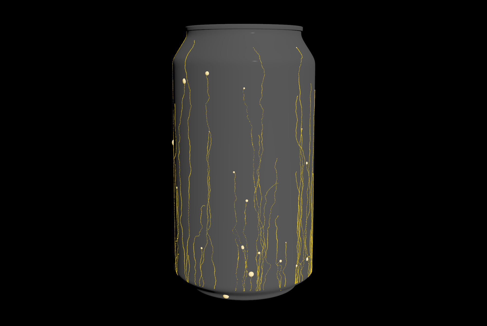
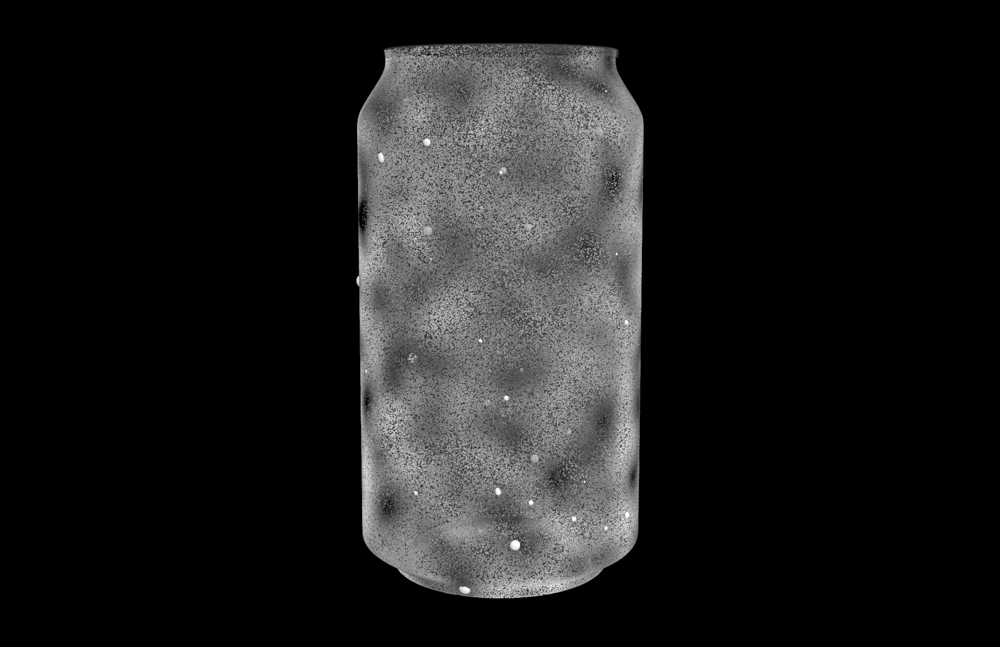
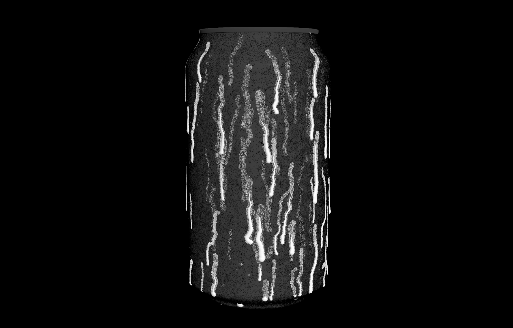
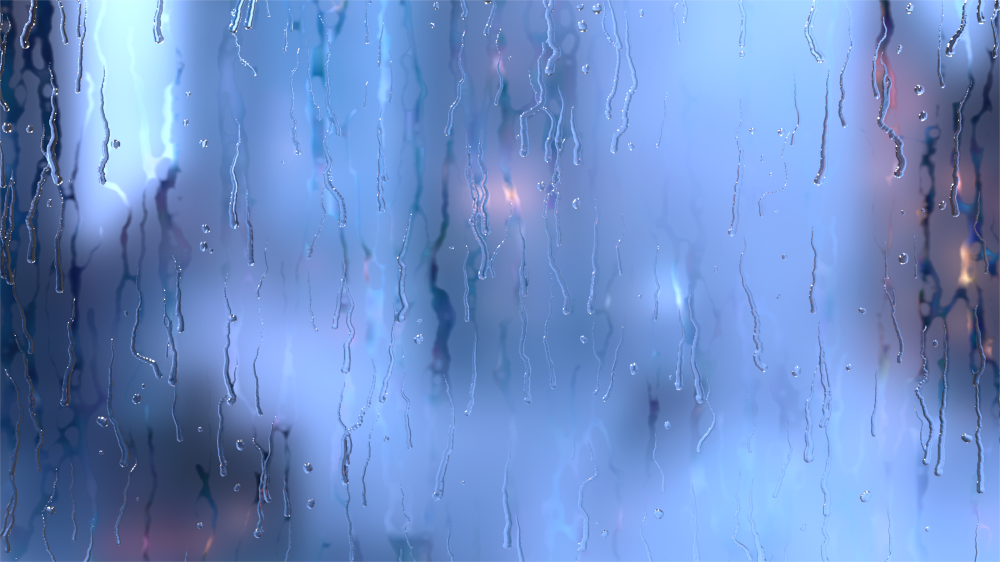

This SOP-based droplet tool for Houdini, built with a lot of control over behavior, appearance, and sourcing in mind, is the result of failing to get the kind of droplet behavior I was looking for with particle fluid sim tools. While this method is not a fluid simulation, it is generally faster and offers more design input. The HDA should work with any input geometry, and it dynamically creates a wetmap texture per frame that can be fed into different values in a render engine (like the roughness value of the glass material in the Octane render below). This tool was built entirely in Houdini using mostly VEX and some python for interactively placing points.
Disclaimer: because this tool doesn't truly simulate anything, droplet behavior won't always be believable or look nice. This is especially true when you might expect a droplet to fall off of something - there are a couple stop parameters in this tool, but a fluid sim would work better for drops that roll down a surface and slide off into space.
Download the OpenHDA for Houdini here: Pay what you want on Gumroad
Droplets can be sourced with either a random scatter of points, or by manually clicking on the geometry where you want to add points using python states (both methods in the following two videos). The frame when the drop starts moving can also be either randomized in a range or manually specified.
This tool also offers a lot of control over drop appearance (size of drops, randomness of size, drop trail length, VDB meshing with static drops) and drop behavior (how much different conditions effect movement, when to stop). I won't go over all of these options here, but some of the preview modes for different information about drop pathing, “friction” noise, and wetmap are displayed below.

For the wetmap to work, the input geometry must have UVs (the wetmap preview will work either way, but the final result is passed into a COP2 net that transfers the wetness attribute to the UV space of the input geometry). Just point to the “wetmap” network within the HDA when setting up a render node and be sure to update textures every frame.

Special thanks to the Toadstorm Nerdblog for this post about xyzdist() and primuv(), two of the VEX functions I used most heavily with this project. I highly recommend checking out this blog. Also thanks to Peter Quint for this video about creating deforming wetmaps.
© 2023 Noah Gunther